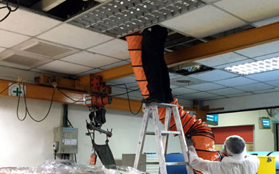
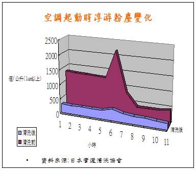

空調風管清潔消毒
| I.A.Q.indoor air quality室內空氣品質改善淨化服務依客戶需求,採用最經濟及有效方式,達到環保署規定之室內空氣品質標準之服務 |
| 風管路污染情況可分下列三項 |
| ①外氣(OA,Outdoor Air)污染:PM2.5.沙塵.羽毛.樹葉..等 |
| ②還氣(RA:Return Air)污染:纖維.微生物..等 |
| ③給氣(SA:Supply Air)污染:PM2.5.鏽.建材.灰塵.纖維.微生物..等 |
| 當環境微細粒子密度增加10μg / m3時，肺癌死亡風險增加8%.(美國醫學會期刊) |

出風口部分
| 出風口部分
|
| 風管部分
|
|
加強版內容
|

PM2.5最高量時間
| 室內PM2.5最高量是在空調開啟1小時內 |
| 粒狀污染物 : 1~5μm的微粒會沉積在人體內，長期吸入造成嚴重呼吸道疾病，如肺部纖維化、呼吸困難、肺癌等,又因工業發展,冬天戶外PM2.5污染最為嚴重,也漸接影響室內空氣品質 |
| 通風管道清潔並與細菌消毒及檢測,方能確保施工驗收標準,每10平方公分達0.1mg(一般) - 0.01mg(高標準)塵量 |